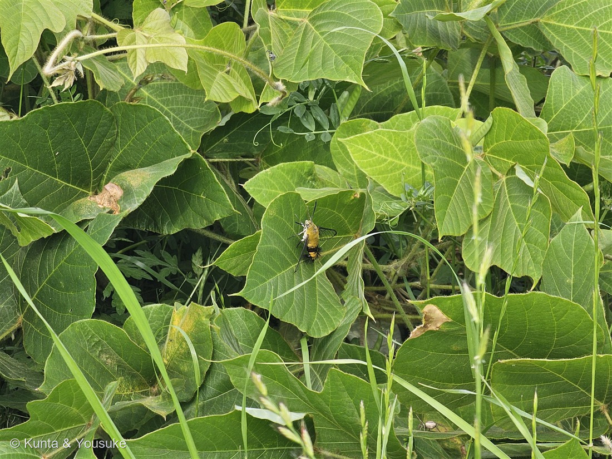
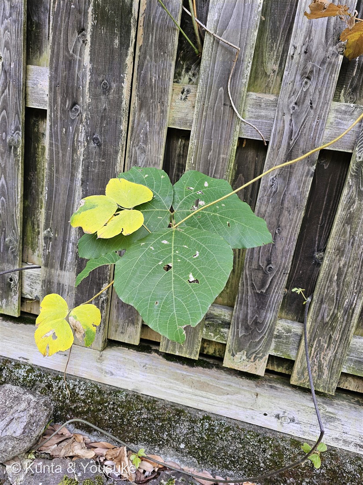
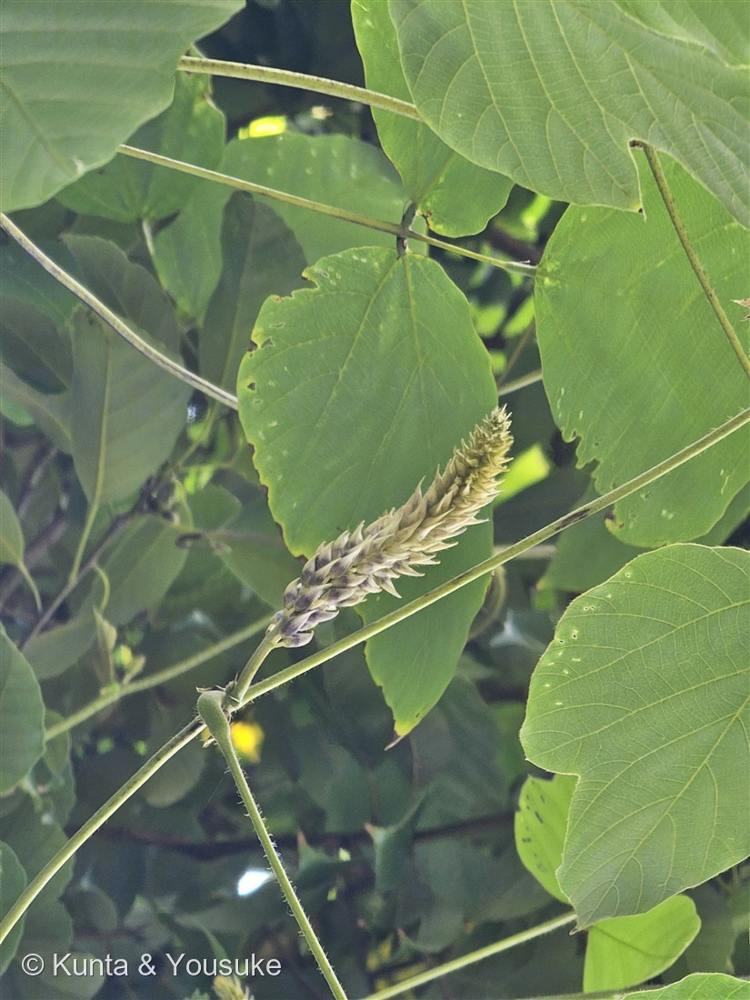

地図を読み込んでいるよ…
🔍 写真も地図も、押しているあいだ拡大して見られるよ（スマホは指を置いてすこし待ってね）。
🌍 の地図＝この子がもともと自生している場所を緑に。東アジア（日本全土・朝鮮半島・中国など）に自生する在来のつる草。⭐アメリカへは1876年に持ち込まれ、いまは「南部を食べた蔓」と呼ばれる侵略的外来種に。
⭐東アジア（日本全土・朝鮮半島・中国など）に自生する在来のつる草だよ。⚠アメリカ大陸は塗っていない——あちらは“原産地”ではなく、この子が入りこんで“緑の怪物”になった侵入先だから。⭐日本の草が海の向こうで暴れる、めずらしい「日本発」の外来種の物語なんだ。
⚠ 地図は国（日本と中国だけ県・省）までしか塗れないから、ほんとうの分布より広く見えていることがあるよ。地図はだいたいの場所。正確なところは、上の文を見てね。
クズ（葛）
Pueraria montana (Lour.) Merr. var. lobata (Willd.) Sanjappa & Pradeep
別名 · 裏見草（うらみぐさ）／生薬名 葛根／ 原産 · 東アジア（日本全土・朝鮮・中国）／ 見どころ · ⭐秋の七草・葛粉と葛根湯・アメリカを食べた蔓・今回は蕾
マメ科 · Fabaceae（クズ属 Pueraria）── 007 シロツメクサ・127 シロバナフジと同じマメ科（根粒菌で窒素固定）
名前と学名の由来 ── 吉野の葛と、スイスの人
- 和名クズ（葛）＝一説に、奈良県吉野の「国栖（くず）」という土地の名から。⭐上質な葛粉（くずこ）の産地だったところだよ。
- 別名「裏見草（うらみぐさ）」＝葉が風にひるがえると、下面の白っぽい毛（＝裏）がよく見えることから。──和歌では「裏見」を「恨み」にかけて詠まれたりもした。
- ⭐属名 Pueraria（プエラリア）＝スイスの植物学者 マルク・ニコラ・プエラリ（Marc Nicolas Puerari） への献名。110 サルスベリ・115 アルストロメリアたちと同じ、人の名前をもらった学名の仲間だよ。
- 種小名 montana＝「山の」／変種名 lobata＝「裂けた」（葉が浅く裂けることから）。
この植物のこと ── 秋の七草の、緑の怪物
- マメ科クズ属のつる性多年草。茎には褐色の粗い毛（写真③の蔓）。葉は大きな三出複葉——頂小葉が菱状円形で、時に浅く3つに裂け、側小葉は2つに裂ける（写真②）。
- ⭐⭐秋の七草のひとつ。万葉集で山上憶良が詠んだ7種（萩・尾花＝ススキ・葛・撫子・女郎花・藤袴・桔梗）の「葛」がこの子。⭐燻太さんの言う「疎まれる緑の怪物」なのに、千年以上むかしから、秋を代表する花として愛されてきた——このギャップが、クズのおもしろいところ。
- ⭐根が、巨大（長さ1.5m・直径20cmにもなる塊根）。ここにでんぷんがたっぷり＝葛粉（くずこ）。葛餅・葛切り・くず湯に。⭐根は生薬「葛根（かっこん）」——風邪のひきはじめの「葛根湯（かっこんとう）」の、あの葛根だよ。燻太さんの言う「デンプンは食用にもなる」は、この葛粉のこと。
- ⭐なぜ、あんなに旺盛？——マメ科だから、根に根粒菌が共生して、空気中の窒素を肥料に変えられる（007 シロツメクサたちと同じ）。やせた空き地でも、自分で肥料を作れる。だから、他の雑草とは勢いが違う。
- 花は赤紫の蝶形花が、直立する総状花序（10〜20cm）にびっしり。⭐ブドウ（グレープソーダ）みたいな甘い香りがするといわれる。花期は7〜9月。
⭐ 逆輸入の怪物 ── アメリカを食べた蔓
- この子は、日本では在来のふつうの草（山野・荒地・道端の土手）。──でもアメリカでは、話がまるで逆なんだ。
- ⭐1876年、アメリカに「園芸・家畜のえさ・土の流出止め」のために持ち込まれた。ところが、あの旺盛さで手がつけられなくなり、南部を中心に広がって、いまや「the vine that ate the South（南部を食べた蔓）」＝侵略的外来種として嫌われている。
- ⭐この図鑑の帰化植物は、たいてい「アメリカ→日本」（085 アメリカフウロ・096 ヨウシュヤマゴボウ…）。でもクズは、その逆。日本の草が、海の向こうで“緑の怪物”になった——数少ない「日本発」の帰化の物語。
⭐ 今日は、蕾だけ ── 花はもっとお散歩
- 写真③の穂は、まだ蕾。紫を帯びた粒が、下から順にひらいて、あの赤紫の蝶形花になる。⚠クズの花は、大きな葉の下にかくれたり、高い所に咲いたりで、あれだけ茂っているのに案外、見つけにくい。⭐燻太さんの言うとおり、きれいな花を撮るには、もっとお散歩が必要——だから今日は蕾で登録して、開花はいつかの宿題にしよう。
- ⭐写真①のお客さん：大きな葉の上で羽を休めているのは、オオスカシバらしき、昼に飛ぶスズメガの仲間。ホバリングしながら花の蜜を吸う子だよ。緑の怪物の葉っぱも、だれかの休憩所。
同定について
- ⭐決め手＝大きな三出複葉（頂小葉が菱状円形で時に3浅裂・側小葉は2裂）＋褐色の粗い毛のつる＋直立する総状花序の蕾＋空き地を覆う勢い＝クズ。
- 似た子との区別：127 シロバナフジ（フジ）も同じマメ科のつるだけど、フジの葉は羽状複葉（小葉が11〜19枚）。クズは3枚——葉の枚数で、はっきり分かれる。ヤブマメ・ノアズキなどの野生の小さいマメ科つるとは、葉と全体の大きさでちがう。
- ⚠花はまだ蕾。開花した赤紫の蝶形花は、次に見つけたら撮り足すよ。
参考：三河の植物観察「クズ」（茎に褐色の長剛毛／葉は羽状3小葉・頂小葉は菱状円形で時に3浅裂・側小葉は2裂／総状花序は直立し10〜20cm・花は赤紫18〜20mm・花期7〜9月／塊根からデンプン＝葛粉／秋の七草）、Wikipedia「クズ」（生薬「葛根」＝葛根湯／秋の七草／アメリカで侵略的外来種）。属名 Pueraria ＝スイスの植物学者 M. N. Puerari への献名。